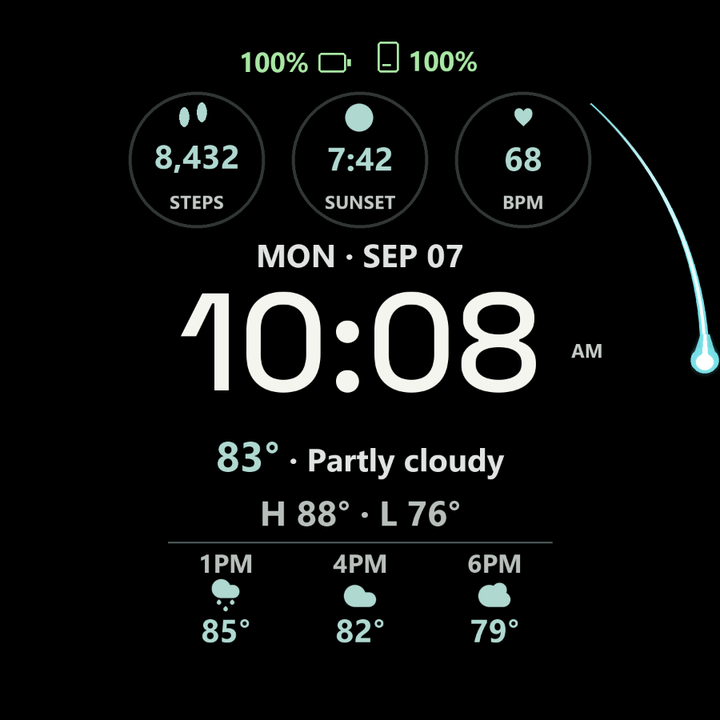
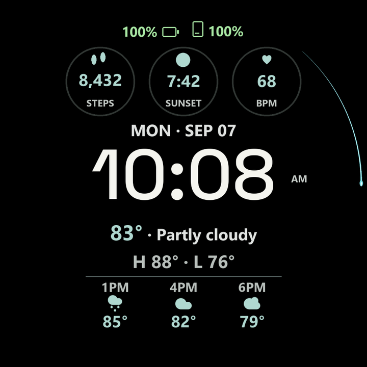

INDEPENDENT WATCH FACE · FREE PREVIEW RELEASE
Time, with
an edge.
Your forecast up front. Your time at the center. A little personality around the outside.
Version 1.5.17 · WFF 5 compatible Wear OS watches
Install directly on your watch. No sign-up.

Rendered preview with sample data
01 / A DIFFERENT KIND OF SECOND HAND
A bold blast.
Or a quiet little comet.
Go wide with an anime-inspired leading head, or keep it barely there with a fine comet. Six effects, plus the original clean ring.

A set-length trail travels behind the moving head, even as it passes 12. On your watch, choose a short, medium or long following distance.
These controls only change this preview. Customize the actual face in your watch’s face editor.
See the minute turn over02 / SAME MINUTE. TWO WAYS AROUND.
Let it follow.
Or start from twelve.
- Following
- The tail keeps a constant distance behind the head. A small streak that goes wherever the seconds go.
- Fixed at 12
- The starting end stays at twelve. The trail grows clockwise through the minute, clears at twelve, then begins again.
Both modes work with all six effects. Following distance applies only to Following mode.
Rendered from the APK’s design and assets, not watch footage.
03 / STILL A WATCH FACE FIRST
The details matter.
The time matters more.
Big, readable time. Useful information around it. Enough room for everything to breathe.
- Forecast, without digging.
- Current conditions, daily high and low, and upcoming hourly weather. Choose a full forecast, compact view or no weather panel.
- Your details, your choice.
- Three customizable circular complications, two discreet shortcut slots, and watch and phone battery indicators. Phone battery needs a companion app on both devices.
- A quieter always-on view.
- The authored AOD layout keeps only the time, with dim and medium options. Seconds effects stay in the active layout.
- The finishing touches.
- Twelve time fonts, two clock sizes and ten-color palettes. Keep the original clean ring or choose a little more motion.
04 / YOUR WRIST, YOUR CALL
Make it yours.
It’s free.
No checkout. No account. Just the signed watch-face APK.
v1.5.17 · 1.44 MB · Signed APK
Before you download: this build requires a watch with Watch Face Format 5 support, introduced with Wear OS 7. It is not an Apple Watch face or a phone app.
Download free APK New to sideloading? Start with the install guide.Automated checks passed. This version’s new effects, on-watch rollover and AOD transitions have not yet been verified on a physical watch. Device support and battery life are not guaranteed.
Build checks & file fingerprint
106 contract tests passed. WFF 5 validation, memory checks and signing checks passed; release lint reported no errors. These are build checks, not a battery-life benchmark.
SHA-256
fce74397f5a54768218ccf72e2612a68df304beb58ba7bf5fcb65925190467cfDownload checksumRelease metadata05 / FROM YOUR PHONE TO YOUR WATCH
A few extra steps.
Then it’s all yours.
This is a direct APK download, not a Play Store install. Opening it on your phone alone won’t install the watch face.
Detailed Wear Installer 2 guide ↗Download on your Android phone.
Save the APK above, then install Wear Installer 2 on your phone. It transfers APKs to your watch.
Pair over Wi-Fi.
Put phone and watch on the same Wi-Fi network. On the watch, enable Developer options, ADB debugging and Wireless debugging. Follow the pairing guide using the temporary pairing code and pairing port.
Send the APK to the watch.
After pairing, use the separate connection port shown on the watch. In Wear Installer 2, choose Custom APK, select the download and tap Install.
Choose it. Customize it.
Open your watch-face picker, add Edge Forecast and enter its editor. Choose your style, trail behavior, colors and complications. Turn off ADB and Wireless debugging when you’re finished.
Add phone battery (optional).
Install and open Phone Battery Complication by amoledwatchfaces on both your Android phone and Wear OS watch. In Edge Forecast’s editor, choose Phone Battery for the phone-battery slot. This companion app is only needed to show your phone’s battery.
THE PRACTICAL PART
Good to know.
Which watches does it support?
This APK declares Watch Face Format 5, introduced with Wear OS 7. Check your watch’s software and WFF support first. Do not assume older Wear OS versions can render it. The layout is designed for round displays; individual models have not been certified for this release.
Why might weather or phone battery be missing?
Weather depends on the watch’s system weather service and permissions. For phone battery, complete the phone-and-watch setup above. The weather-panel tap opens Samsung Weather and needs that app installed.
Is the video an actual watch recording?
No. Images and video are rendered previews using the packaged effect geometry and head assets over sample face data. The video runs at 10× speed so you can see the reset quickly. Actual device rendering and performance can differ.
What about always-on display and battery life?
The face defines a time-only AOD layout. The six effect styles use smooth seconds in active mode; the default clean ring offers stepped motion. We have not measured this release’s battery use or verified its AOD transitions on a physical watch, and an earlier low-battery transition-freeze report remains unresolved.
How do updates and feedback work?
Future APKs can be posted here. This is a manual sideload, with no automatic update service. An update must retain the same package and signing identity. You can report an issue on GitHub; include your watch model and software version, but never pairing codes, passwords or other private details.
Does this page track me?
We haven’t added analytics, advertising, sign-up forms or third-party media embeds. Assets are served from this site. GitHub Pages hosts the site and may log visits for security; see GitHub’s privacy statement. Watch data services and complication providers have their own privacy practices.